Tutorial de instalacion servidor SMTP
Abril 4, 2023 posted por Juan E. Castro
El protocolo simple de transferencia de correo (SMTP) es un protocolo TCP/IP que se utiliza para enviar y recibir correo electrónico. Normalmente se utiliza con POP3 o con el protocolo de acceso a mensajes de Internet (IMAP) para guardar mensajes en un buzón del servidor y descargarlos periódicamente del servidor para el usuario.
Requisitos:
- Programa ThunderBird en el cliente
- Direccion Ip estatica
- Maquina virtual Centos 7
- Maquina virtual con Window XP, 7, 8, 8.1
Paso 1: Instalacion de Postfix.
Para montar nuestro servidor de correos uno de los servicios que nesecitaremos sera postfix, el cual se instalara de la siguiente manera.
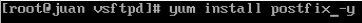Paso 2: Instalacion de Dovecot.
Para montar nuestro servidor de correos uno de los servicios que nesecitaremos sera dovecot, el cual se instalara de la siguiente manera.
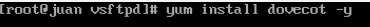Paso 3: Configuracion de postfix.
La configuracion de postfix se realizara en la siguiente ruta /etc/postfix alli abriremos el archivo de configuracion main.cf y realizaremos las siguientes configuraciones.
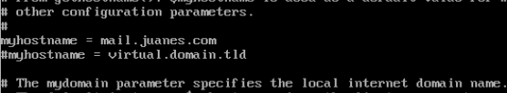 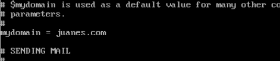 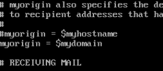 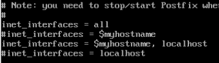 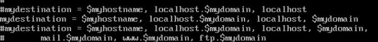 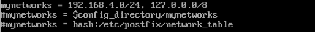 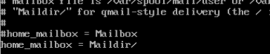Paso 4: Configuracion de Dovecot.
Para la configuracion de dovecot se realizara de la siguiente manera en el archivo ubicado en /etc/dovecot.
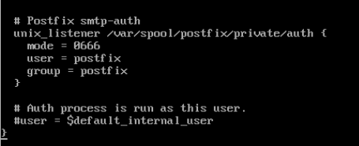 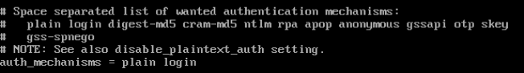 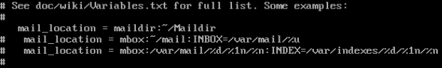 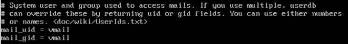 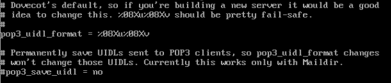 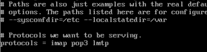Pruebas de funcionamiento del servidor SMTP.
La verificacion se realizara desde el lado del cliente utilizando el programa ThunderBird el cual nos permite ingresar al correo electronico creado a traves del servidor SMTP de una manera mas grafica. Al ingresar al programa seleccionaremos la opcion de email y alli llenaremos las credenciales de los usuarios que se crearon del lado del servidor en el programa Mercury, si el servicio esta funcionando nos permitira acceder al correo y realizar todas las tareas correspondientes.
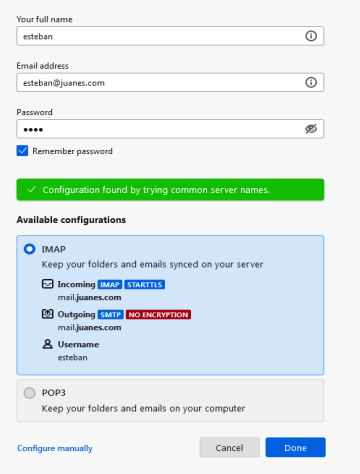 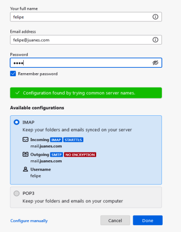